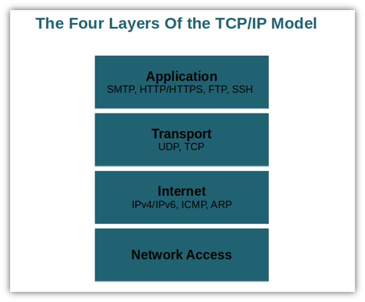

TCP/IP is the set of communication rules that controls how data is sent and received across the internet. It is made up of two parts: TCP (Transmission Control Protocol), which breaks data into packets and makes sure they all arrive correctly, and IP (Internet Protocol), which handles addressing — making sure each packet is sent to the right destination using IP addresses.